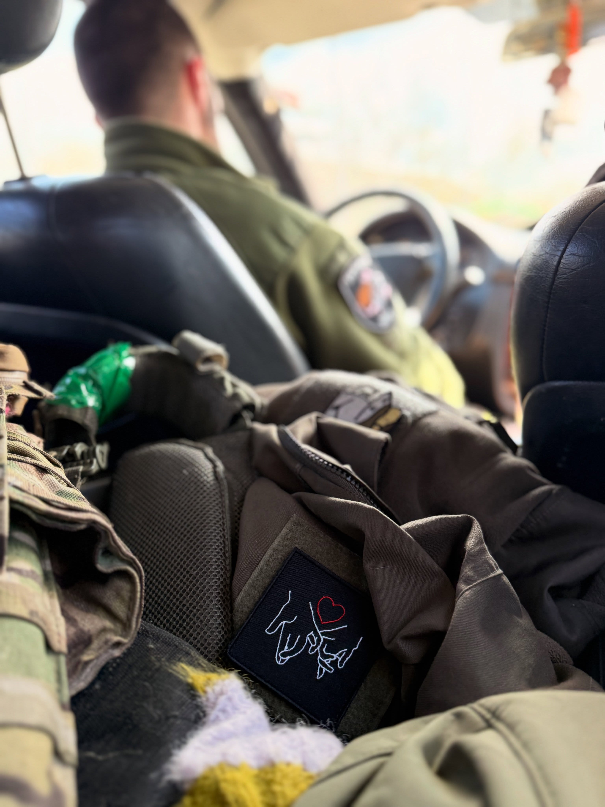
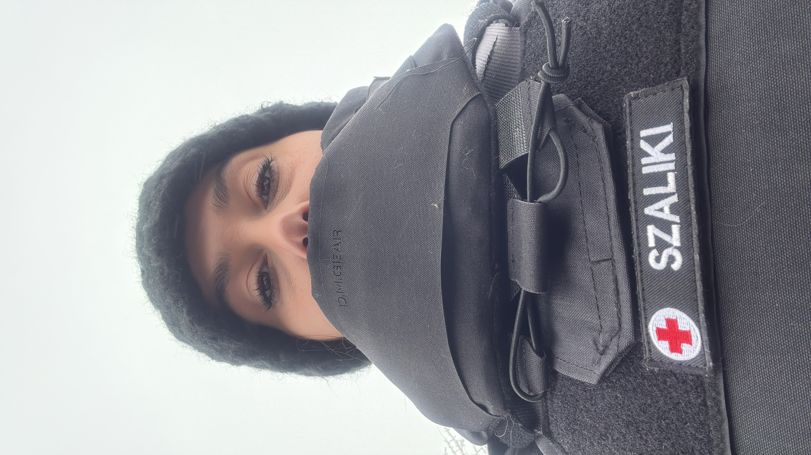
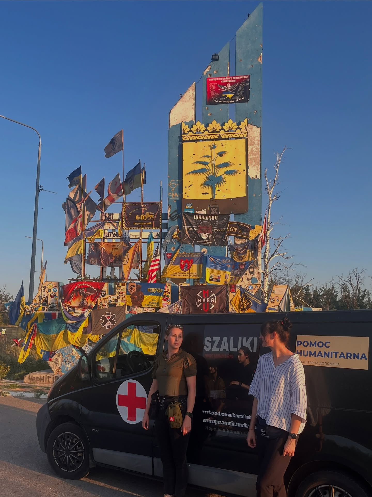

Sarah
Originator of SZALIKI and organizer of aid. From the second day of the war, she and her friends helped transport food and blankets. Over time, she began to organize further trips to Ukraine - always close to people and their everyday needs.
We listen, organize and go. During subsequent trips, we learned how important it is to be able to rely on each other.
There are people with us who help silently and want to remain anonymous. We will not reveal their names or put them in front of the camera. We just want to say: we see you and we remember you. Your presence is part of this journey - in trust, kind words and support that comes without fanfare.
Thank you for being here.
These are just short portraits. Our trips together and the people we meet say the most about us.
Originator of SZALIKI and organizer of aid. From the second day of the war, she and her friends helped transport food and blankets. Over time, she began to organize further trips to Ukraine - always close to people and their everyday needs.
Before he turned 18, he started traveling to Ukraine with humanitarian aid. He has a medical background and shares his knowledge with the team, teaching things that we hope we will never have to test in practice. He is specific in his actions; he can talk about fear directly.
He graduated from art school, is interested in history and historical reconstruction, and runs a family farm. He was helping people from the beginning of the war. He shares the idea with Sarah of creating an exhibition of objects brought from Ukraine - to talk about what is happening there.
He works with horses every day. Her first trip to Ukraine immediately took her to Kramatorsk. Sarah describes her as: calm, tough, with a good head on her shoulders - someone who doesn't panic in difficult moments and helps you regain balance.
We developed the silhouettes based on conversation published in "Gwarek" on June 14, 2026 ↗.





